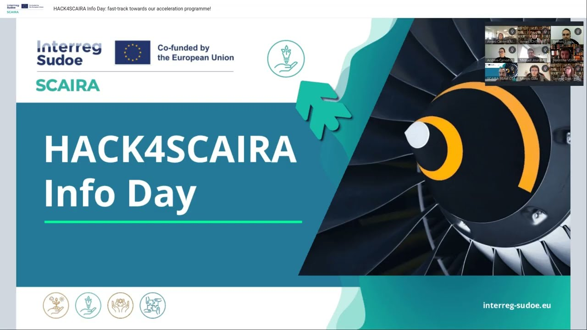

Stage 1 - Site web entreprise
Petit site vitrine réalisé avec Wordpress. Fonctionnalités : Agenda google connecté via API uniquement accéssible par l'utilisateur authentifié.
Étudiant en informatique / développement web. J'aime créer de petits projets pour apprendre et expérimenter.
Sur ce site, vous trouverez une sélection de mes projets, mon CV et une brève présentation.
Petit site vitrine réalisé avec Wordpress. Fonctionnalités : Agenda google connecté via API uniquement accéssible par l'utilisateur authentifié.

Hackathon de 24H pour Airbus et Renault

Exercice de mise en page responsive et accessibilité. Utilise : CSS Grid / Flexbox.
Étudiant en BTS SIO, option SISR (Solutions d’Infrastructure, Systèmes et Réseaux). J’apprends l’administration systèmes et réseaux, la virtualisation, la mise en place de services (AD, DNS, DHCP), le scripting (Bash/PowerShell), la supervision et les bases de la sécurité.
Passionné par l’univers de la cybersécurité et de l’informatique en général, je progresse à travers des projets concrets et une veille technique régulière.